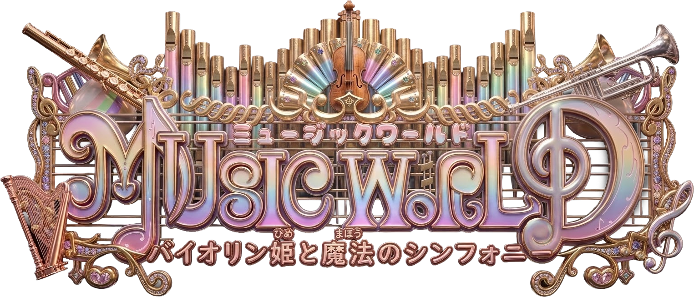
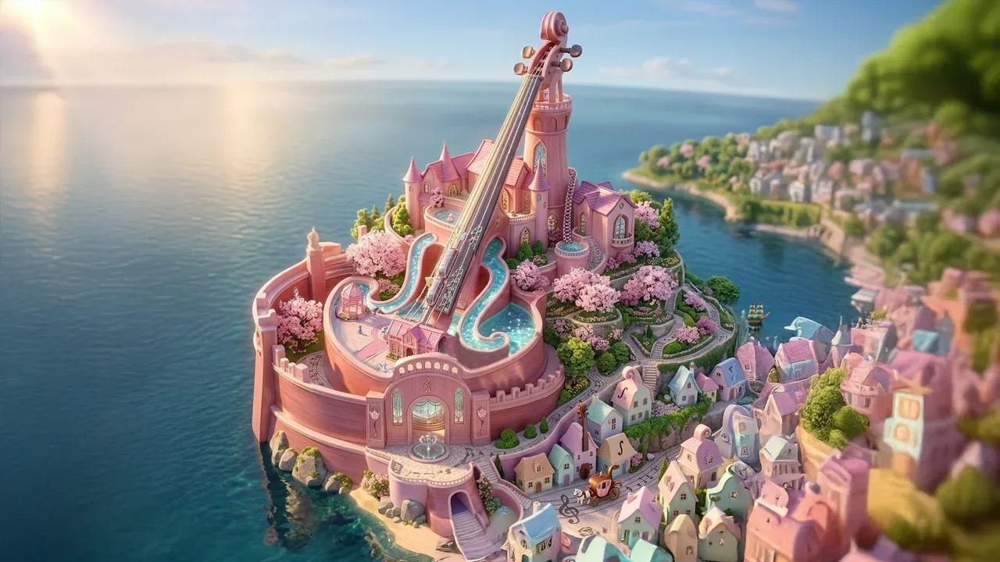
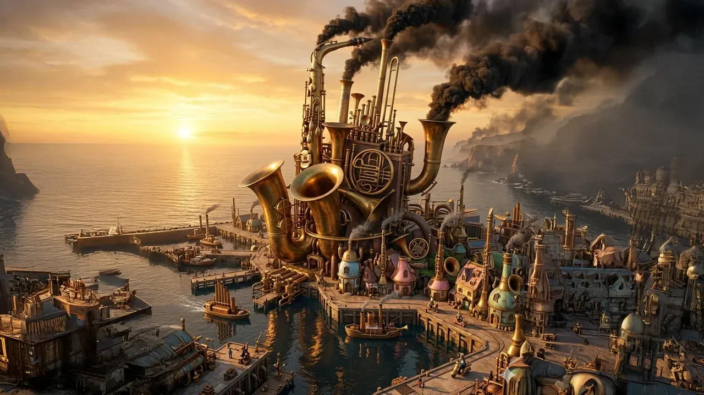
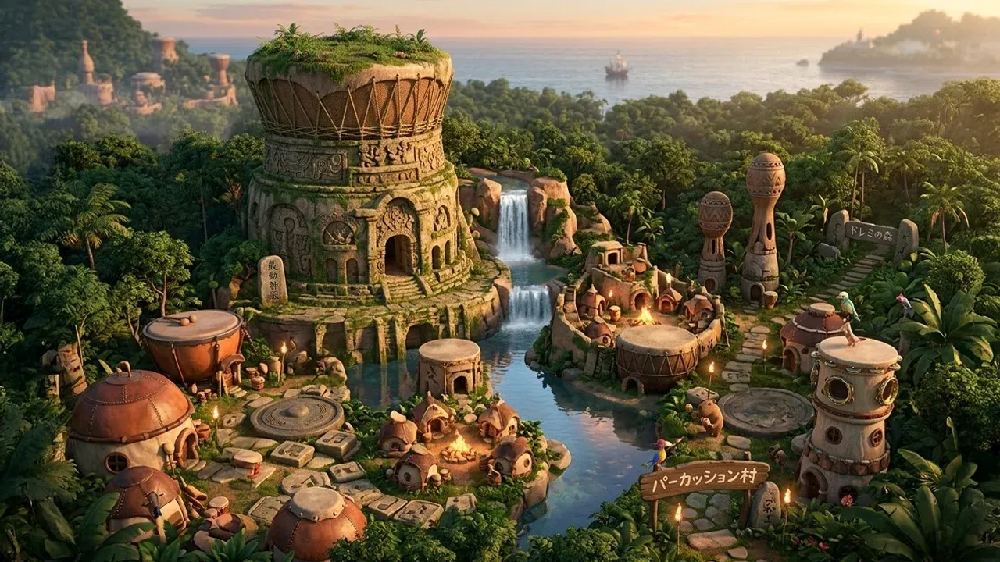
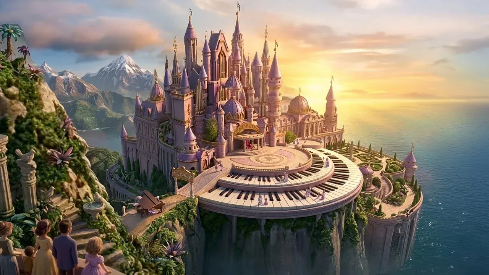

音楽は魔法
弦・管・打・鍵——四つの国それぞれの音楽が持つ固有の魔法の力。バイオリン姫が奏でる繊細な旋律は、人々の心を動かし世界を変える力を秘めている。

異なる音色が奏でる、世界を救うシンフォニー——
弦・管・打・鍵、四つの国の音楽が一つになるとき奇跡が生まれる。
弦・管・打・鍵——四つの国それぞれの音楽が持つ固有の魔法の力。バイオリン姫が奏でる繊細な旋律は、人々の心を動かし世界を変える力を秘めている。
ゲンガク・カンガク・ダガク・ケンバンガク——それぞれが独自の文化と音楽の魔法を持ち、対立と友情の狭間で揺れる四国の物語。
かつての敵と手を組み、仲間と絆を深め、師に学ぶ——すべての旅が一つのシンフォニーへと収束するクライマックスは、見た者の心を永遠に揺さぶる。
家族を奪われた姫の脱出から、師との修行、仲間との絆、そして世界を救うグランドシンフォニーまで——24章にわたる深く感動的な物語。
弦・管・打・鍵。それぞれの音楽が魔法となる、四つの国。パネルに触れて、旅の舞台をのぞいてみよう。

I ゲンガク国桜色の城と水路がきらめく、伝統と気品の国。バイオリン姫の故郷であり、物語のはじまりの地。
ワールドを見る →
II カンガク国蒸気と真鍮が輝く、即興と活気の要塞都市。街角からはジャズのような演奏が聞こえてくる。
ワールドを見る →
III ダガク国深い森の奥でリズムを刻む、部族の村々。狂いのない拍子とともに踊る暮らしが息づいている。
ワールドを見る →
IV ケンバンガク国鍵盤のような街並みに尖塔がそびえる、神秘の帝国。ドラゴンの影が舞うという噂も絶えない。
ワールドを見る →勇敢な姫、黄金の騎士、謎めいた王子——個性豊かなキャラクターたちが、ひとつのシンフォニーを奏でる。